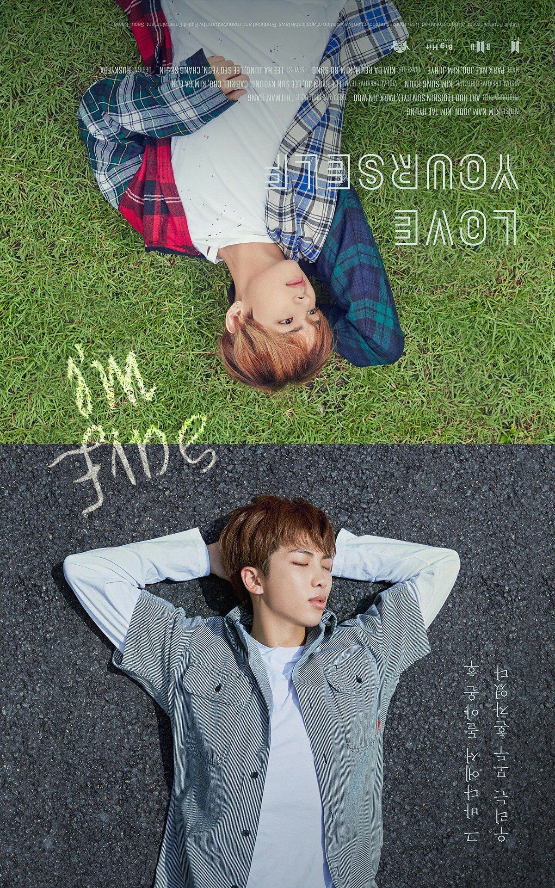

#ㅁㅊ! 6
방금 방탄 컴백 앨범을 듣던 중 놀라운 발견을 했다! 일단 이번 앨범에 대한 소감은 나중에 천천히 올리도록 하겠다.
2016년 ‘화양연화: Young Forever’앨범의 수록곡 중 ‘Save Me’라는 노래가 있었는데, 2017년 ‘Love Yourself’ 앨범 시리즈가 처음 나오기 시작할 때 공개된 포스터 중 이런 것이 있었다:
(Pinterest에서 퍼옴)
Save me를 거꾸로 하면 I’m fine이라는 글자가 되는 포스터.
그런데, 이번 앨범의 수록곡 중 ‘I’m Fine’이라는 곡이 있다. 아니나다를까, 이 곡은 ‘Save Me’의 주 반주로 시작한다. 한 번 코러스가 끝나자마자 작게 테이프 감기는 소리가 들리면서 본 곡이 시작되는데, 계속 듣고 있다 보면 특정 반주가 배경에서 반복되고 있음을 알 수 있다. 특히 30초부터 RM이 랩을 시작하는데, 이때부터 그 반주가 선명하게 잘 들린다. 그런데, 듣고 있다 보니 순간 이상한 ‘삘’이 꽂혔다. 일단 곡 초반에 나오는 ‘Save Me’의 반주의 음을 들리는대로 적어봤다.
B5 B B A F# (쉼) (E) F# A F# E (F#) E D B4
온라인 피아노 시뮬레이터를 켜서 이것을 거꾸로 쳐보았다.
그런데 ‘삘’이 적중했다. ‘I’m Fine’에 계속 나오고 있던 반주는 ‘Save Me’의 것을 거꾸로 재생한 것이었다!
심지어 ‘Save Me’에서는
그 손을 내밀어줘 save me, save me/내 손을 잡아줘
라는 가사가 등장하는데 ‘I’m Fine’에서는
이젠 내 손을 놔도 괜찮아 I’m fine
이라는 가사가 있다.
작년에 나온 포스터를 시작으로 반주와 가사까지 정확히 대비시켜 내는 것이 놀랍다. 방탄의 세계관과 앨범 간의 이야기들은 아직 잘 모르지만 분명 심오한 뜻이 숨어있는 것은 사실인 것 같다.
흔히 사람들은 ‘방탄소년단은 아이돌이 아니라 아티스트다’라고들 하는데, 정말 맞는 말이라고 생각한다. 필자는 작년에 Love Yourself 기승전결 트레일러를 보고 정말 신선한 충격을 받고 방탄에 입덕했는데, 그 이후로 단 한 번도 실망한 적이 없다. 세계관, 퍼포먼스, 뮤직비디오, 그리고 음악과 음악, 앨범과 앨범 사이의 숨겨진 이야기들. 정말 대단한 아티스트라는 것을 다시 한 번 실감할 수 있었다.